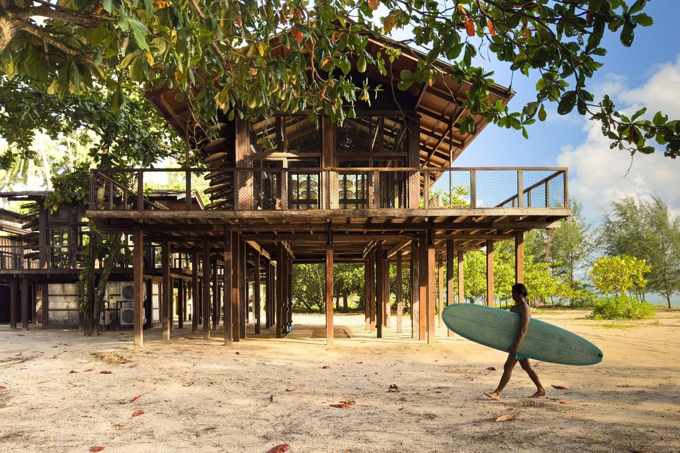

91建筑与设计
401Boonserm Premthada 在泰国考拉做海边办公室「Traces By The Sea」：四栋木屋用栈道相连，材料来自旧米仓和学校
四维 83×1.1 建筑与设计≈ 91
Wallpaper* 11 月 14 日 16:00 报道，曼谷设计工作室的 Boonserm Premthada 在泰国考拉（Khao Lak）的 Matalay 完成海边办公项目「Traces By The Sea」：四栋独立木构体量以甲板和步道相连，强调通风与开放走道。建筑师解释，项目名称里的 traces 指向材料来处——部分来自博他仑府旧米业合作社，部分来自攀牙府的木构学校，运到考拉后保留了原来的油漆、节点和被使用过的表面。Wallpaper* 称这是 Premthada 一贯的材料实验的延续，他曾以象粪砖塔和「百分之五十设计」自宅受到关注，阿瑜陀耶社区餐厅还拿过 2022 年 Wallpaper* Design Award。摄影为 Spaceshift Studio。
💡 点评把旧米仓和学校的木料原表留下来，再拆成四栋用栈道串起来的海边办公，比一座新盖的玻璃盒子有记忆。如果你对热带木构和回收建造感兴趣，这组照片值得点进去看完。
来源：Wallpaper*